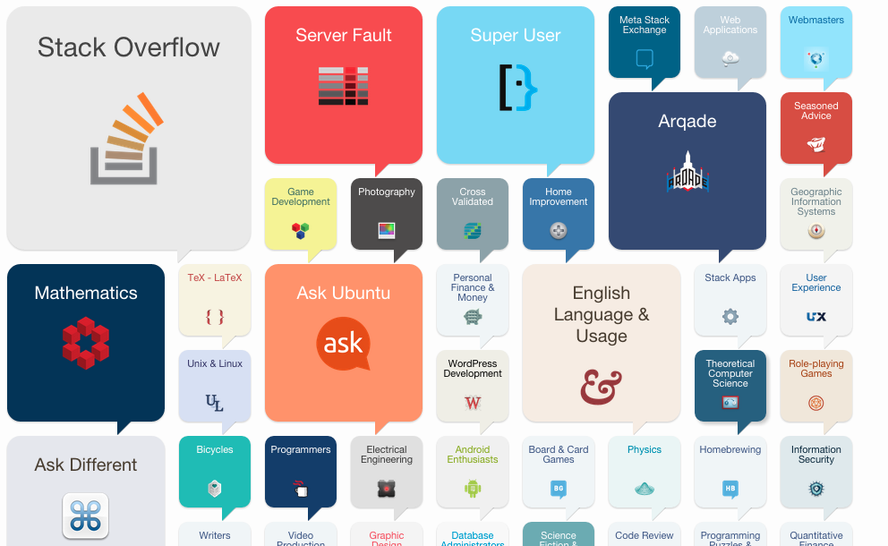

StackExchange and How Their Data Stacks Up
StackExchange
is a network of over 130 Q&A communities including Stack
Overflow, the preeminent site for programmers to find, ask, and
answer questions about software development. Stack Overflow is
the most popular with serving over 26 million programmers per month.
StackExchange has a network of sites that rank 54th
in the world. Their large ecosystem has 110 sites and is growing at
a rate of 3 or 4 a month; 4 million users; 40 million answers; and
560 million page-views a month. To be able to handle that load, it
requires a lot of hardware and strategic handling of that data. 
Figure
1 Stack Exchange Sites
So how is it done? With just 25 servers, yes only 25 servers. Stack Overflow still uses a scale-up strategy. They are holding out against using the cloud since it still makes financial sense to host their data on their own servers. How are the servers run? 2 TB of SQL data all stored on SSDs, Each web server has 2x 320GB SSDs in a RAID 1, and each ElasticSearch box has 300 GB also using SSDs. They also primarily use SSDs to increase speed and efficiency. Intel 330 as the default (web tier, etc.) Intel 520 for mid tier writes like Elastic Search and Intel 710 & S3700 for the database tier. S3700 is simply the successor to the high endurance 710 series. StackExchange uses databases to store this wide array of data. The database of choice is the MS SQL Server. StackExchange works because it is kept simple. Coding is kept to a minimum and security is high level as well. On the StackExchange website you can report any security vulnerabilities. A couple years ago, a database administrator for StackExchange posted about what it takes to run Stack Overflow. To get a more personal look into StackExchange check out that article here. To get more extensive data and behind the scenes of StackExchange you can check out this blog.
Written by Jonathan Barry
24 February 2015